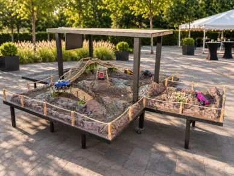
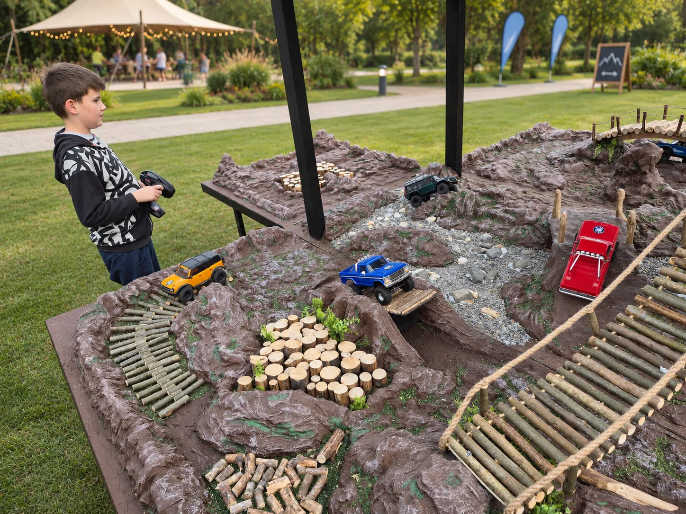
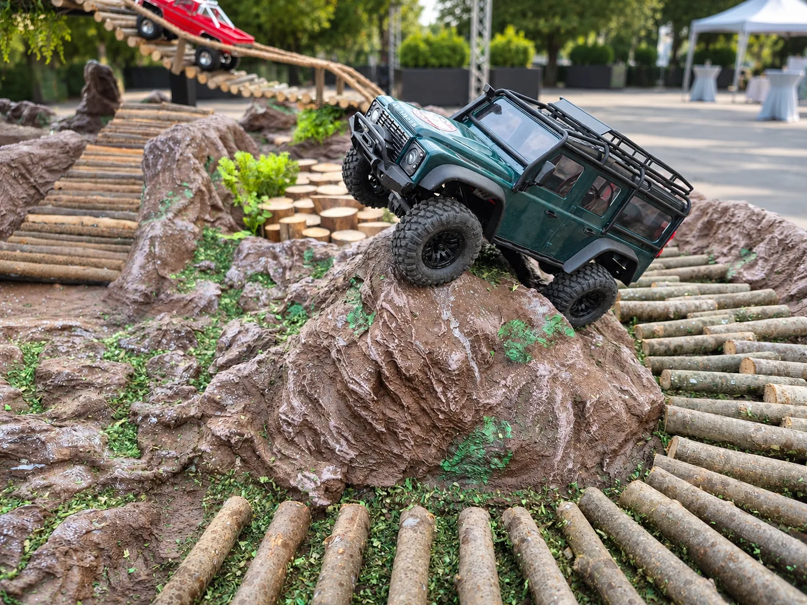
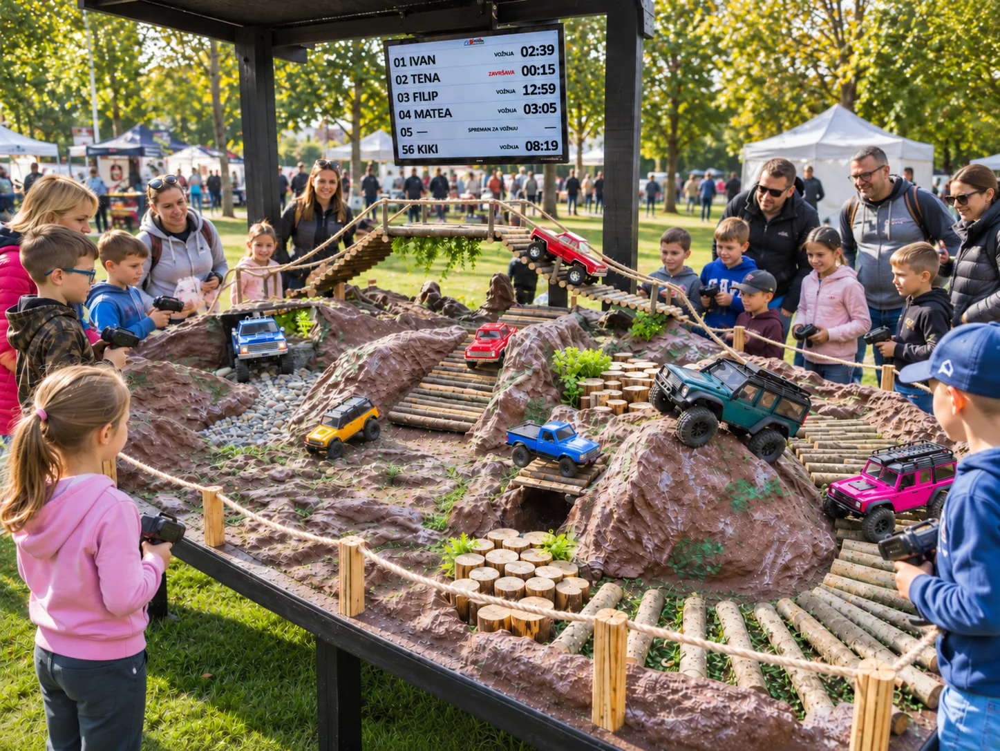

Doživljaj
Staze, mostovi, usponi i prepreke stvaraju izazov koji gosti mogu sami isprobati.
Mobilna RC off-road atrakcija za djecu i odrasle.
Za Family Day, festivale, trgovačke centre i auto-moto događanja. Mi dovozimo arenu, vozila i vodimo aktivnost.
* Kapacitet je izmjeren s djecom, jednim operaterom i izmjenama sudionika u testiranoj konfiguraciji. Stvarni protok ovisi o formatu događanja, trajanju vožnji i uvjetima rada.
ROKARO privlači pozornost i poziva goste da se uključe. Upravljanje RC vozilima pretvara jednostavnu aktivnost u zanimljiv izazov za sudionike i publiku.
Staze, mostovi, usponi i prepreke stvaraju izazov koji gosti mogu sami isprobati.
Sudjelovanje je jednostavno za početnike, a svladavanje prepreka zanimljivo je i odraslima.
Mi donosimo opremu, postavljamo arenu i vodimo aktivnost tijekom događanja.
Dogovorimo lokaciju i trajanje, postavimo arenu te vodimo RC vožnje. Organizator osigurava dogovoreni prostor i uvjete, a mi preuzimamo provedbu aktivnosti.




Od korporativnog Family Daya do auto-moto susreta: ROKARO je dodatna atrakcija za događanja koja žele aktivno sudjelovanje gostiju.
Sadržaj za djecu i roditelje unutar organiziranog programa.
Atrakcija za obiteljske vikende, promotivne akcije i sezonske evente.
Dodatni sadržaj s jasnim pravilima, ritmom izmjena i preglednom organizacijom.
Tematski prirodan sadržaj za publiku koja voli vozila, kontrolu i teren.
Organizirana off-road avantura za djecu i goste. Paketi se dogovaraju zasebno prema terminu i lokaciji.
Upit za rođendanNajvažniji podaci na jednom mjestu, bez skrivanja operativnih uvjeta. Konačan format i trajanje potvrđujemo u ponudi.
Izmjereno uz jednog operatera i izmjene; nije garancija za svaki događaj.
Potrebno je dodatno mjesto za sudionike i publiku.
Na odgovarajućoj podlozi i uz prikladne vremenske uvjete.
Približno, ovisno o pristupu i pripremljenosti lokacije.
Arenu, RC vozila, upravljače, javni ekran i organizaciju vožnji.
Odgovarajuću površinu, dodatni prostor i električni priključak.
Preuzmite kratku ROKARO prezentaciju s fotografijama, tehničkim informacijama i pregledom usluge. Spremna za prosljeđivanje klijentu.
Preuzmite B2B prezentaciju PDF · 1 stranicaMostovi, usponi, stjenovite prepreke i cijela modularna arena u jednom pogledu.
Jednostavan operativni dogovor: mi donosimo arenu i vodimo aktivnosti, a s organizatorom unaprijed usklađujemo prostor, pristup, struju i uvjete izvedbe.
Broj vozila i konačni opseg usluge potvrđuju se za konkretno događanje. Navedena površina odnosi se na arenu i ne uključuje dodatni prostor za publiku.
Najvažnije informacije za organizatore događanja i roditelje na jednom mjestu.
ROKARO je mobilna RC off-road arena za događanja. Sudionici sami upravljaju malim RC terenskim vozilima kroz prepreke, mostove i različite podloge.
Sudjelovati mogu djeca od 6 godina nadalje i odrasli. Prethodno iskustvo nije potrebno za osnovno sudjelovanje i zabavu.
U probnoj konfiguraciji s jednim operaterom izmjereno je 25–30 djece po satu. Stvarni kapacitet ovisi o trajanju vožnji i organizaciji programa.
ROKARO dolazi s opremom i operaterom. Mi vodimo vožnje i osnovnu organizaciju atrakcije tijekom dogovorenog angažmana.
Da, uz odgovarajući prostor, podlogu i uvjete rada. Kod vanjskih angažmana izvedba ovisi o vremenskim prilikama i dogovoru.
Približno 15 minuta u tipičnoj konfiguraciji, uz uvjet da su pristup i prostor pripremljeni. Stvarno vrijeme može varirati ovisno o lokaciji.
Planirate Family Day, festival, auto-moto susret ili rođendan? Javite nam se izravno. Dogovorit ćemo odgovarajući format i pripremiti ponudu.
Vrstu događanja, lokaciju, datum ili okvirni period te planirano trajanje. To je dovoljno za početak razgovora.
Beli Manastir · Hrvatska